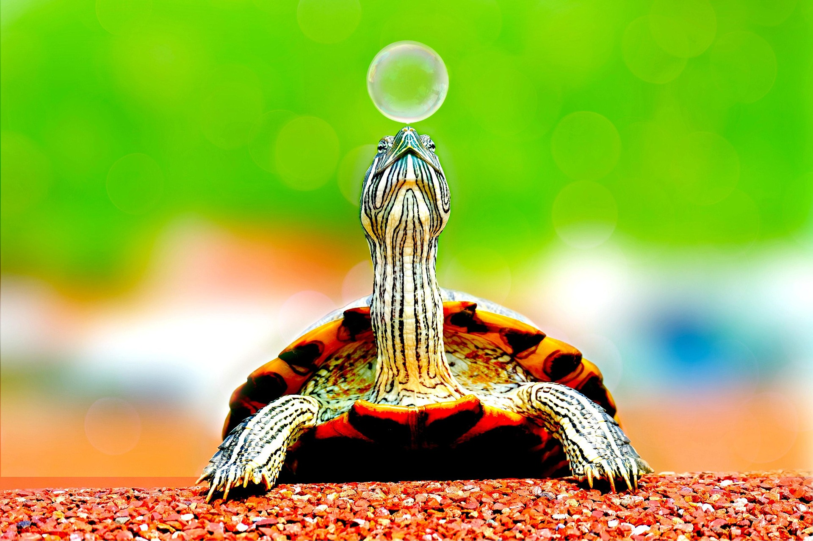

(Testudines)
La tortuga es un reptil de vida larga, conocida por su caparazón protector y su lentitud característica. Históricamente ha sido símbolo de longevidad y paciencia, y algunas especies han convivido cerca de los humanos mientras otras permanecen en hábitats naturales. Gracias a su resistencia y adaptaciones, las tortugas pueden vivir en ambientes terrestres, de agua dulce o marina, mostrando hábitos de alimentación variados según la especie. Dependiendo de la especie, su esperanza de vida puede oscilar entre 50 y más de 100 años, necesitando alimentación adecuada, agua limpia y protección de su hábitat. Las tortugas presentan una gran diversidad de tamaños, colores y hábitos de vida, siendo algunas herbívoras y otras omnívoras, y desempeñando un papel importante en el equilibrio de los ecosistemas donde habitan.
Características